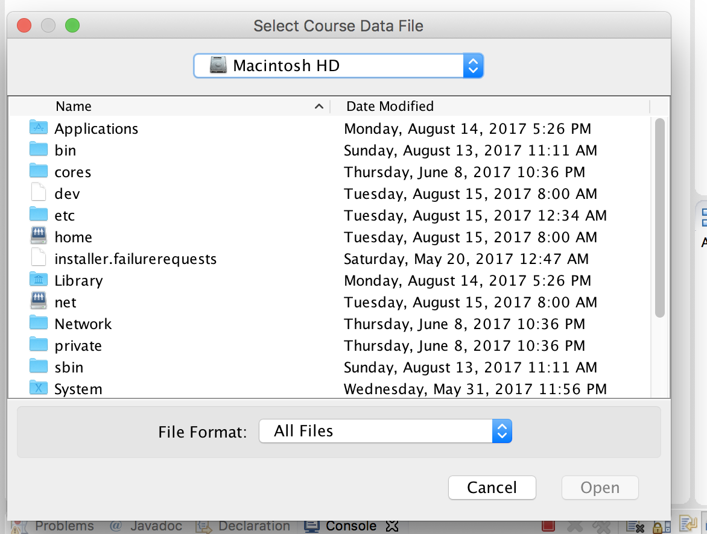
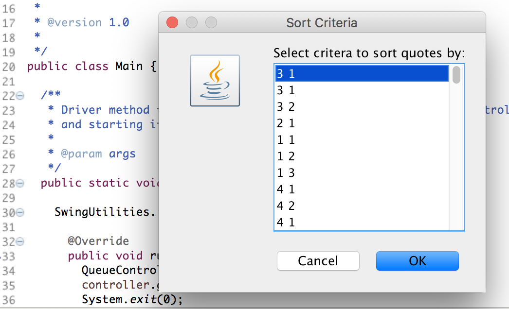
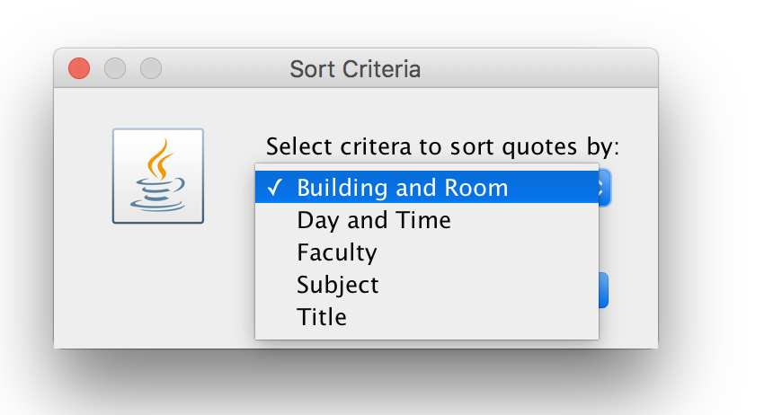
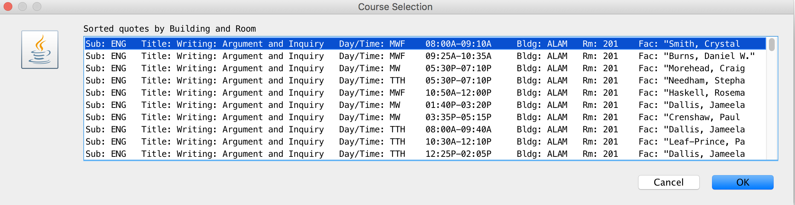

Student Registration Summary: Created a multi tool college course classification selector. Using UML high level class design. The program imports class courses through a simple aggregation method. The data is then created into objects and transformed in data structures. The user is prompted with a few methods on how they would like to see the imported data using a clean user interface, achieved from a JOptionPane. The program then displays the sorted data and allows the user to utilize each sortation through a looping algorithm. The program also demonstrates an ability to use Exception Handling to cleanly handle invalid protocol. College Course Sorter Summary: Created a real world application that allows a registrar's office to take in registering students and allow them to be dropped into an enhanced queue. Student data is passed into the Java program and parsed through a multi loop structure. The program is able to provide a simple interface to select the database needed and then give an output example of the queue lineup. The program also demonstrates an ability to use Exception Handling to cleanly handle invalid protocol. Student Registration Execution: Following a UML class design, I started out my object oriented program with six unique classes. Using a “QueueController” as my main internal source, I also made a “Main” class to begin the program for a cleaner environment setup. In the controller class I imported a few libraries that I knew I would need. These included java.io.File, java.io.FileNotFoundException, java.util.ArrayList, and java.util.Scanner. I next moved onto replicating a GUI view so the user could interact with the program.   The GUI class had similar imports as the controller, along with a JFileChooser and a JOptionPane. Both of these imports are the building blocks for the programs interface. In this class I created multiple methods including an error checking method, which invoked when a file was imported in an invalid format. The next couple of methods pulled up a JFileChooser window to allow the user to select the student data they want to import. Back in the controller class, an instance of the GUI class had to be created so I could invoke the methods inside of it. In my program I called this "view" and then initialized a go() method to begin using the object. Most of the calling in the go() method is done through try and catch statements to insure error handling. Next I moved onto creating the “Model” class. This was made up of a queue along with an arraylist for the registered students. This class uses methods to go through the imported data and parses out unique features to add into the arraylist. It also uses the pop and poll characteristics of a queue to construct the Model's data structure. After linking the “Model” class into the controller, I then worked on creating a custom queue class. Java already has a predefined queue class but to get the customization I needed, this meant I would need to implement my own add and offer method. Using iterators I began using my own system to log each student. This system comprised of adding each registered student to the queue using a filtered system. Using information such as a student's year to give priority allowed the process to work as needed. To run this program, both the add and offer method don't both necessarily need to be in my queue class. I programmed both just incase I needed to use a specific use case. To finalize the program I went back into the UI class and implemented a method to allow the user to see the queue lineup. This feature would not be needed in a real world use case, but useful to have for testing purposes. This is because in a real world example, the data would not be prompted as a pop up view, but ported to another system for further instructions. Then by linking the controller to the “Main” class this allowed me to create an instance of the “QueueController” class and run the go method. The final program did not have all these features such as an exception handling and a customized Queue, but through curiosity and an interest in learning, I got more in depth. Future updates to the program could include creating a client side application for the students to register into classes. This would mean the data imported into this program would have to be pulled from a server side which would constantly have to be checking for changes to an online database. College Course Sorter Execution: The program uses a ten class UML design. During the design stage it began as only five classes but to fully implement an objected oriented program, utilizing ten classes was the route I choose to take. Using a controller as the main source of method calling, I used a class called “CourseController” along with a “Main” class to call the program once finished.   Similar to the Student Registration program, I created a UI class called "CourseView”, which held the entire interface inside. Even though the class still used JOptionPane's the methods inside utilized a different set of components. The “CourseView" would prompt the user to import a file that contained a course catalog, then would ask the user (using a showInputDialog container which allowed a multi fashion scheme) to pick from a drop down selection. The selections were pre-installed, to allow a clean flow to each JOptionPane. Going back into the controller class, the UI was implemented in the controller and an instance was created. The next step was to provide multiple sortation methods that were named in the drop down selection. Each sorting method was granted there own class which was compiled of a “BuildComparator”, “DayTimeComparator”, “SubjectComparator”, and “TitleComparator” class. Depending on the users choose, one of these classes would be called and a compare method was used to go through the entire database, having unique filtration system depending on the class selected. Next I moved onto creating an object for each course. Since the data parsed into the system consisted of a course having a building, faculty, room number, section, start date, subject, term, and a title, this is exactly what each course object was made up of. Inside the class contains an "extractData" method to do all the heavy lifting for separating out each piece in the database. To test the course objects, I overrode the toString method. I then ran into the problem of having course names counteract my GUI format depending on the length. After doing research on the matter, I used the trim and substring methods to allow each piece of data to be cut if over a certain length. I began running into a few other problems as I started to filter through the data, using each of the unique sorting classes. Since I wasn't fully finished with the program, I created a small GUI design to let me know when the data was done filtering. As the program would run through the database, nothing would show up to say completed. After using the eclipse debugging tool, I was able to come to the conclusion that the algorithm runtime was expected to be way to slow. I knew that waiting to long for each sortation would make this not a viable program to use. After experimenting with different sorting algorithms, I was able to dramatically bring down the run time for each sorting category. The last steps involved allowing the user to see the sorted courses. Inside the my UI class I created a method called “displayGrid”. Here I was able to pass in an arraylist that stores a list of course objects. Using a “UIManager”, I customized the layout to display all the courses in the sorted order that the user had chosen. After the program was able to run with a high success rate, it consisted of the user choosing a customized sorting method and the data would then be presented in the form of a scrolling window pane. I wanted to take this a step further and allow the user to go back and select another form of sorting and continue until they were done. This involved error checking on each interface window along with reformatting the controller to always be checking for boolean values. Updates to the program could involve allowing the user to select a specific course and gain more information for each selection. This would involve creating a method to detect which course has been selected. Then the program would pass this data along to a new JOptionPane, which could be in direct contact with a University's database, where specific data about each class is held. Utilizes: Java, JOptionPane UI, UML Design, Data File Error Handling, GIT, FileWriter Visit Project